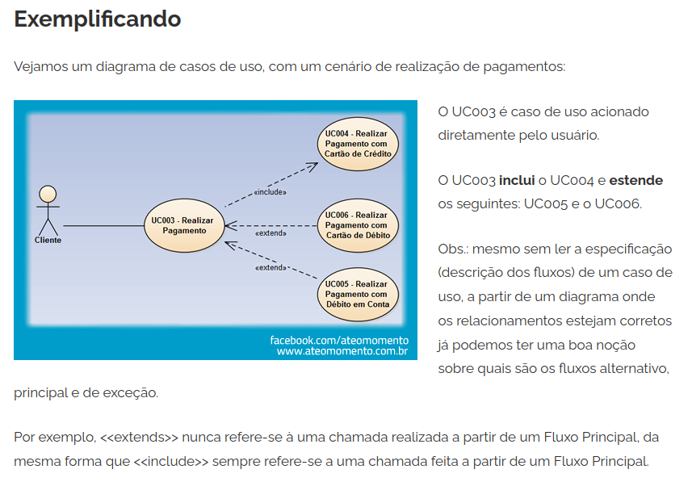
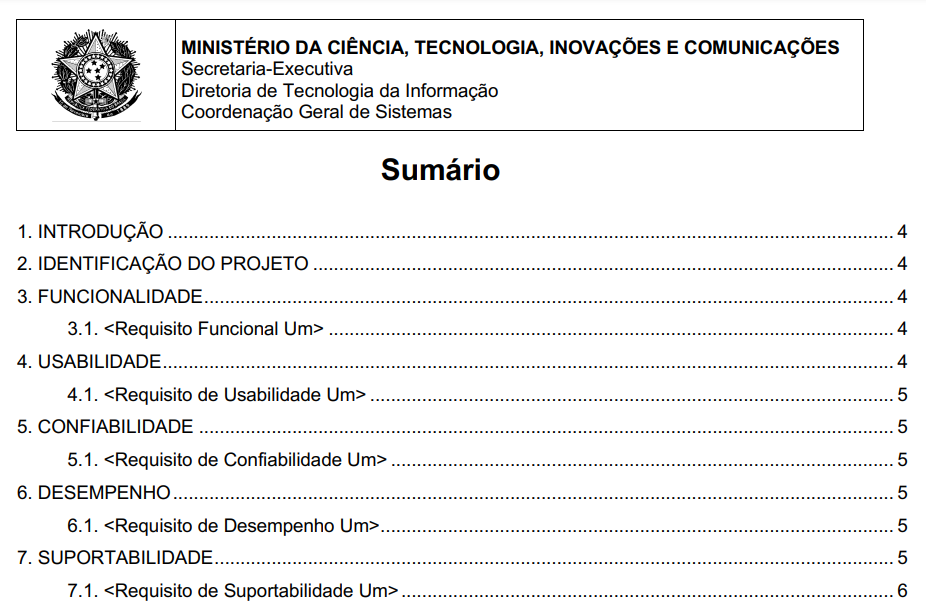
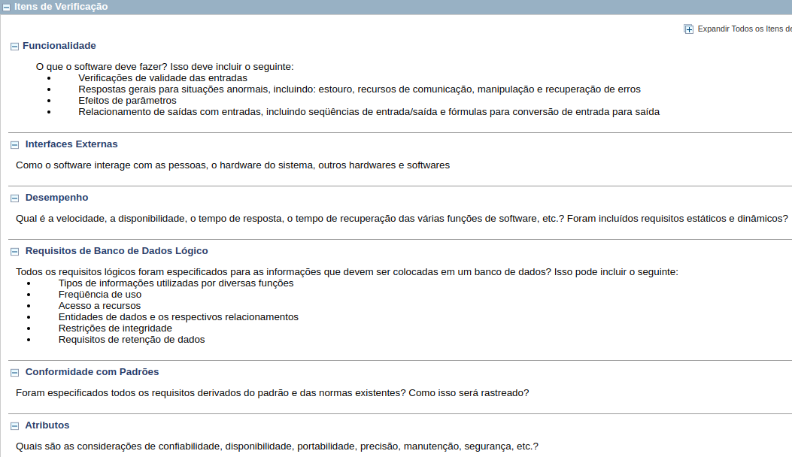
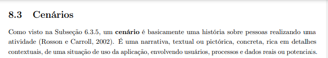
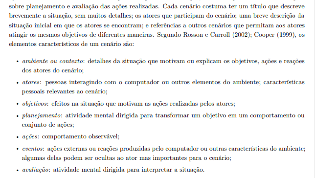
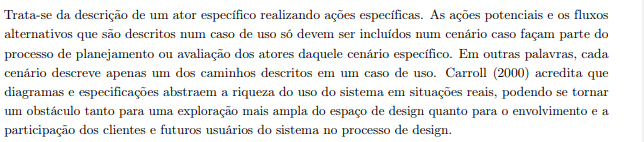

Lista de Verificação - Entrega 3
Introdução
O artefato apresenta o planejamento da verificação dos artefatos desenvolvidos pelo grupo 4 e grupo 5 durante a Etapa 3 (Modelagem de Requisitos).
Objetivos
O objetivo deste documento é registrar a lista de verificação da 3ª etapa do Grupo 4, que será utilizada para verificar artefatos do próprio grupo e do Grupo 5.
Metodologia
Através de reuniões, o grupo decidiu adotar a metodologia de verificação por inspeção desenvolvida por Fagan (Michael E. Fegan) em 1976. Dessa maneira, cada integrante participa na entrega do projeto nos prazos planejados. Cada artefato varificado gera um relatório anexado junto aos demais artefatos daquela entrega. Para responder às perguntas apresentadas nas listas de verificação o avaliador usará as opções Sim, Não, Incompleto ou Não se aplica. O avaliador tambem poderá escrever observações para cada item, se achar necessário.
Lista de Verificação
Tabela 1 – Casos de Uso
| ID | Descrição | Fonte | Autor |
|---|---|---|---|
| 01 | O diagrama representa o sistema, que é o software modelado, como um retângulo intitulado pelo nome do sistema? | Vídeo 1, a partir de 01:46 | João Pedro |
| 02 | O diagrama representa atores como bonecos-palito posicionados fora do sistema? | Vídeo 1, a partir de 02:10 | João Pedro |
| 03 | Cada ator é intitulado como um tipo ou categoria (como cliente ou banco), ao invés de uma entidade específica (como João ou Banco do Brasil)? | Vídeo 1, a partir de 02:53 | João Pedro |
| 04 | Os atores que iniciam a utilização do sistema (chamados primários) estão posicionados à esquerda do sistema, enquanto os atores que reagem (chamados secundários) estão posicionados à direita? | Vídeo 1, a partir de 03:14 | João Pedro |
| 05 | Os casos de uso são representados por uma forma oval, posicionada dentro do sistema? | Vídeo 1, a partir de 04:09 | João Pedro |
| 06 | Cada caso de uso é intitulado com uma frase que começa com um verbo? | Vídeo 1, a partir de 04:50 | João Pedro |
| 07 | Os relacionamentos entre ator e ator, entre caso de uso e caso de uso, e entre ator e caso de uso são denotados por algum estilo de linha? | Vídeo 1, a partir de 05:41 | João Pedro |
| 08 | Cada caso de uso está relacionado com pelo menos um ator ou outro caso de uso? | Vídeo 1, a partir de 05:41 | João Pedro |
| 09 | Os relacionamentos associativos são representados como linhas sólidas? | Vídeo 1, a partir de 05:17 | João Pedro |
| 10 | Cada ator do diagrama está ligado a pelo menos um caso de uso através um relacionamento associativo? | Vídeo 1, a partir de 05:17 | João Pedro |
| 11 | As flechas tracejadas que representam inclusão e extensão de casos de uso são diferenciadas pelos títulos “<<incluir>>” e “<<estender>>”, respectivamente? | Vídeo 1, a partir de 08:30 e 09:26 | João Pedro |
| 12 | Estão anotadas, junto às extensões, as observações que descrevem as condições para que elas ocorram? | Vídeo 1, a partir de 12:08 | João Pedro |
| 13 | Cada generalização está representada com setas sólidas que apontam para caso de uso (ou ator) geral? | Vídeo 1, a partir de 11:10 | João Pedro |
| 14 | Casos de uso com pontos de extensão são representados como ovais divididas ao meio (um lado com o título, o outro com os pontos de extensão)? | Vídeo 1, a partir de 11:41 | João Pedro |
| 15 | O fluxo básico é denotado quando múltiplos fluxos são possíveis? | Caso de Uso ─ Fluxo Alternativo | João Pedro |
- Ator: são entidades externas que interagem com o sistema modelado. Podem ser outros sistemas, pessoas, organizações, etc.
- Caso de Uso: são tarefas realizadas por atores, cuja execução deve ser apoiada por funcionalidades contidas no sistema
- Relacionamento: são as interações que um elemento do diagrama possui com outros elementos. Os tipos de relacionamentos são:
- Associação: é uma interação entre um ator e uma tarefa que é realizada por ele
- Inclusão: indica dependência entre casos de uso. Sempre que o caso de uso base é executado, o caso de uso incluso é executado como parte dele
- Extensão: indica um caso de uso base que pode implicar na execução de outro caso de uso, chamado estendido, se cumpridas certas condições. Pontos de extensão podem ser informados para o caso de uso base quando ele possuir múltiplos casos de uso estendidos, a fim de especificar os caminhos alternativos
- Generalização: estabelece um caso de teste geral, ou primário, e caso(s) de teste específico(s), ou secundário(s), que herdam todas as características do caso base, e ainda podem ter outras características distintas
- Fluxo: é um caminho tomado pelo ator em um sistema, passando por casos de uso conectados por relacionamentos. Existem três tipos básicos de fluxo:
- O fluxo básico é o caminho esperado mais comum de ser tomado, geralmente composto por relacionamentos de inclusão.
- Um fluxo alternativo é um fluxo esperado diferente do fluxo básico, e geralmente são denotados por relacionamentos de extensão.
- Um fluxo de exceção é um fluxo que indica um erro ou um estado indesejado/inesperado, mas que foi previsto por ser possível.
Tabela 2 ─ Especificação Suplementar
| ID | Descrição | Fonte | Autor |
|---|---|---|---|
| 16 | A especificação apresenta os Requisitos Não-Funcionais no modelo FURPS (Funcionalidade, Usabilidade, Confiabilidade (Reliability), Desempenho (Performance) e Suportabilidade)? | Modelo de Especificação Suplementar | João Pedro |
| 17 | É especificado o efeito das entradas na saída/resultado do caso de uso? | Lista de Verificação Suplementar | João Pedro |
| 18 | São especificadas respostas para situações anormais, como recuperação de erros? | Lista de Verificação Suplementar | João Pedro |
| 19 | A especificação apresenta as interfaces externas do caso de uso? | Lista de Verificação Suplementar | João Pedro |
| 20 | A especificação apresenta mantém rastreabilidade para requisitos derivados de padrões ou normas? | Lista de Verificação Suplementar | João Pedro |
| 21 | Foram considerados velocidade, disponibilidade, tempo de resposta e tempo de recuperação das funcionalidades? | Lista de Verificação Suplementar | João Pedro |
- Interface Externa: É a especificação de como um software interage com agentes externos, como usuários, hardware e outros softwares
Tabela 3 ─ Cenários
| ID | Descrição | Fonte | Autor |
|---|---|---|---|
| 22 | O cenário descreve uma situação concreta de uso do sistema? | Livro de IHC e UX | João Pedro |
| 23 | O cenário possui título, descrição e referência à cenários alternativos? | Livro de IHC e UX | João Pedro |
| 24 | O cenário descreve o ambiente ou contexto em que ele se passa? | Livro de IHC e UX | João Pedro |
| 25 | O cenário descreve o(s) ator(es) envolvidos e seus objetivos? | Livro de IHC e UX | João Pedro |
| 26 | O cenário descreve o planejamento de cada ator? | Livro de IHC e UX | João Pedro |
| 27 | O cenário descreve a avaliação do ator às situações experienciadas? | Livro de IHC e UX | João Pedro |
| 28 | O cenário descerve um dos possíveis fluxos de um caso de uso? | Livro de IHC e UX | João Pedro |
- Cenário Alternativo: um cenário alternativo narra uma maneira diferente de alcançar o mesmo objetivo que outro cenário
- Objetivo: é o efeito desejado, é o que motiva o usuário a tomar uma atitude (que pode não se limitar à interação com o sistema em questão)
- Planejamento: é a atividade mental do ator para determinar a sequência ações que cumprem seu objetivo
- Avaliação: é a atividade mental do ator para interpretar a situação
Tabela 4 ─ Léxico
| ID | Descrição | Fonte | Autor |
|---|---|---|---|
| 29 | O léxico a apresenta a noção de cada símbolo? | Léxico Ampliado da Linguagem (resumo) | João Pedro |
| 30 | O léxico apresenta o impacto de cada símbolo? | Léxico Ampliado da Linguagem (resumo) | João Pedro |
| 31 | O léxico indica quais símbolos são sinônimos? | Léxico Ampliado da Linguagem (resumo) | João Pedro |
| 32 | Cada símbolo é caracterizado por um, e apenas um, dos seguintes tipos: sujeito, verbo, objeto ou estado? | Léxico Ampliado da Linguagem (resumo) | João Pedro |
Noção: a noção, também chamada denotação, é a descrição do significado da expressão/símbolo Impacto: o impacto, também chamado conotação, é a descrição das implicações/efeitos do seu uso na aplicação. Deve-se indicar os efeitos de um símbolo juntamente com os efeito que afetam/causam esse símbolo.
Evidências
Vídeo 1 ─ Diagrama de Caso de Uso
Fonte: Lucid Software Português
Imagem 2 ─ Fluxo Alternativo de Caso de Uso

Fonte: Até o Momento
Imagem 3 ─ Modelo FURPS na Especificação Suplementar

Fonte: MCTIC
Imagem 4 ─ Lista de Verificação de Especificação Suplementar

Fonte: Centro de Informática UFPE

Fonte: Interação Humano-Computador e Experiência de Usuário, p. 172
Imagem 6 ─ Elementos de um Cenário

Fonte: Interação Humano-Computador e Experiência de Usuário, p. 172
Imagem 7 ─ Cenário versus Caso de Uso

Fonte: Interação Humano-Computador e Experiência de Usuário, p. 173
📚 Referências Bibliográficas
1. Barbosa, S. D. J.; Silva, B. S. da; Silveira, M. S.; Gasparini, I.; Darin, T.; Barbosa, G. D. J. Interação Humano-Computador e Experiência do usuário. Autopublicação. 2021. 172-173. ISBN: 978-65-00-19677-1.
2. Leite, Julio C. S. P. Léxico Ampliado da Linguagem: Resumo. Disponível em: https://www-di.inf.puc-rio.br/~julio/lal.pdf. Acessado em: 08/12/2024.
📑 Histórico de versão
| Versão | Descrição | Autor(es) | Data de Produção | Revisor(es) | Data de Revisão |
|---|---|---|---|---|---|
1.0 |
Criação do documento | João Pedro | 06/12/2024 | ||
1.1 |
Correções e adição de hyperlinks | João Pedro | 08/12/2024 |